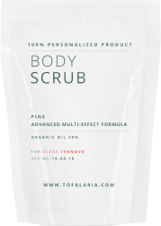

Заполните анкету — это займёт не более 3-х минут. Мы отправим бесплатное предложение с описанием индивидуально подобранных активных веществ в вашей косметике и стратегию ухода.
что такое персонализированная косметика и каковы её преимущества?
Рецептуры косметики разрабатываются индивидуально для каждого клиента с учётом особенностей его кожи — для быстрого и устойчивого анти — эйдж эффекта, а также решения текущих проблем
Уникальный состав. Подобран специально для решения ваших текущих проблем.
Решает сразу несколько задач одновременно
Высокие дозировки активных веществ эффективно справляются со сложными задачами
Запах вашего средства на выбор. Более 50 запахов элитного парфюма
Произведено за несколько дней до отправки вам
Ваше Имя и Фамилия на этикетке
Персональная поддержка каждого клиента
Косметика TOFALARIA на 100% функциональна. Идеально подойдёт именно для вашей кожи. Вы получаете максимальный анти-эйдж эффект.
Персонализированная косметикав несколько раз превосходит по качеству обычную серийную косметику (в том числе «элитную» и «профессиональную»), которая производится на основе усреднённых данных тысяч покупателей с примерно одинаковым типом кожи
в 90% случаев наши клиенты видят значительные улучшения кожи в течение короткого времени
Косметика TOFALARIA на 100% функциональна. Идеально подойдёт именно для вашей кожи. Вы получаете максимальный анти-эйдж эффект.
Индивидуальная косметика TOFALARIA — это симбиоз высокотехнологичных компонентов и натуральных ингредиентов, которые используют лучшие мировые мастера косметологии
Вместе со специалистом выберите необходимые средства, получите бесплатно стратегию анти-эйдж ухода и предложение с описанием индивидуально подобранных активных веществ
какие задачи успешно решает персонализированная косметика?
Появление сети морщин
Провисание кожи — птоз
Потеря тонуса кожи
Ухудшение тона и цвета лица
Ухудшение текстуры кожи и расширенные поры
Отеки на лице
Сухость и шелушение кожи на лице и теле
Выпадение волос и ухудшение структуры волос
Аллергические реакции на большинство косметических средств
Пигментация
Появление сети морщин
Выпадение волос и ухудшение структуры волос
Аллергические реакции на большинство косметических средств
Отеки на лице
Потеря тонуса кожи
Сухость и шелушение кожи на лице и теле
Провисание кожи — птоз
Ухудшение тона и цвета лица
Ухудшение текстуры кожи и расширенные поры
Пигментация
Сравнение персонализированной косметики Tofalaria с серийной косметикой
Персонализированная косметика в несколько раз превосходит по качеству обычную серийную косметику (в том числе «элитную» и «профессиональную»), которая производится массово, на основе усреднённых данных тысяч покупателей с примерно одинаковым типом кожи
серийная косметика
В том числе «люкс», «элитная», «космецевтика», «лечебная»
0%
0%
20 - 40%
10%
0%
0-30%
20%
10%
7%
0-30%
VS
Диагностика состояния кожи
Персонификация средств
Эффективные дозировки активных веществ
Персональная поддержка от производителя
Возможность выбрать аромат или оставить средство без запаха
Физиологичная структура крема, улучшение барьерных функций
Возможность учесть несколько проблем с кожей при составлении формулы
Хранение в холодильнике для возможности использования мягкой консервации
Забота о микробиоме кожи
Минимум балластных веществ
косметика tofalaria
Персонализированая косметика. В том числе комплексный уходВ том числе индивидуальный комплексный уход
90%
100%
100%
100%
100%
100%
100%
80-100%
85-100%
85-100%
*Данные в таблице примерные и основаны на составах средств косметических компаний в открытом доступе Заполнить анкету
персонализированная косметика физиологична по составу, а значит, максимально совместима с клетками кожи
Наши средства не перегружают регенерационные процессы кожи и дают вашей коже работать на омоложение, не «отвлекая внимание» на балластные компоненты
Улучшает качества кожи за счёт улучшения её микробиома. Максимальная забота о нем с помощью наших средств.
Снижает потери воды и разглаживает сеть мелких морщин, которые возникают от обезвоженности, за счёт уникальной фосфолипидной составляющей крема
Благодаря физиологической структуре, крем улучшает барьерные функции кожного покрова и возвращает комфорт
Улучшает тонус и текстуру кожи, уменьшает морщины за счёт совершенствования синтеза коллагена эластина и гиалуроновой кислоты
Не содержит парабенов, красителей, силиконов и других балластных улучшителей. Может быть без запаха.
аромат вашей косметики тоже можно выбрать!
50 ароматов
на выбор в вашем персональном средстве
Уникальные ароматы в вашей косметике, созданные профессиональными парфюмерами. Запах вашего средства на уровне элитной парфюмерии
роскошный парфюм и персонализированная косметика в одном флаконе
Примеры ароматов вашей персонализированной косметики, которые вы можете выбрать в процессе заказа
Нероли и молоко - хит, натуральный и очень женственный аромат. Самый повторно заказываемый.
Малина и кашемир - бархатный и теплый, он переливается оттенками малины, кашемира, карамели и фиалки с пудровым шлейфом.
Пионы - самый нежный цветочный хит. Многие наши клиенты предпочитают его.
Карамель - аромат, изготовленный из натурального сырья. Если к нему добавить каплю аромата йогурта, получится настоящий хит.
Огурец - для любителей свежих запахов. Яркий, освежающий. Хорош и в креме, и в геле для душа.
Уд - всегда сложно описать. Дорогой, чувственный, статусный. Все любители уда весьма довольны.
Роза - для любителей цветочных ароматов, также пользуется популярностью у наших клиентов.
Йогурт - пряный аромат для гурманов. Теплый, домашний, не раздражающий, натуральный.
используем передовые активные вещества
Высокие дозировки активных веществ из Кореи, США, Европы и Японии, чтобы вы получили лучший результат
Лучшие на сегодняшний день пептиды улучшают тонус, текстуру, разглаживают сеть мелких морщин, а главное оказывают качественную профилактику за счёт совершенствования синтеза коллагена, эластина и гиалуроновой кислоты: Copper Tripeptide-1 (GHK-Cu), tripeptide-5, F3Acetyl Tripeptide-2, Acetyl Dipeptide-1 Cetyl Ester, Palmitoyl Tripeptide-38, Carnosine, Anserine, Oligopeptide-34
Вещества, восстанавливающие липидный барьер, защищают кожу от потери воды: полиненасыщенные жирные кислоты, церамиды, физиологические липиды, антиоксиданты
Витамины разглаживают морщинки, улучшают текстуру, уменьшают поры, улучшают цвет лица: ниацинамид, липосомальный витамин С, D-пантенол, витамины группы B, витамин А
Бакучиол - редчайший дорогостоящий актив, который прошел двойное слепое рандомизированное исследование и доказал свое анти-эйдж действие, сопоставимое с ретинолом, но без его побочных эффектов. L-Орнитин уплотняет и подтягивает кожу. Моделирует овал лица. ДНК молок лососевых рыб - продукт биотехнологий, который используется для улучшения показателей качества кожи.
Антиоксиданты для того, чтобы ваша кожа оставалась молодой как можно дольше: ресвератрол, гидрокситиразол, СОД, кровь дракона, трипептид меди
Активы для улучшения микроциркуляции - это основа анти-эйдж: ниацинамид, альфа глюкозил гесперидин, троксерутин, экстракты растений.
Увлажняющие вещества — эктоин, ацетилглюкозамин, компоненты натурального увлажняющего фактора, треголаза, фруктоолигосахариды, полиглутаминовая кислота, можно долго продолжать… Мы не используем гиалуроновую кислоту. По многим точкам зрения, стоим особняком от косметологической отрасли. По нашему опыту, она бесполезна, нужно работать над улучшением синтеза собственной гиалуроновой кислоты. Для производителя это сложнее, но результат того стоит.
Кислоты, которые улучшают качество кожи, но не повреждают барьерную защиту кожного покрова и не меняют микробиом: агариковая, азелаиновая, производные салициловой, эллаговая, галловая кислоты. А также фруктовые энзимы.
Вместе со специалистом выберите необходимые средства, получите бесплатно стратегию анти-эйдж ухода и предложение с описанием индивидуально подобранных активных веществ
почему стоит перейти на персонализированную косметику?
При изготовлении средства персонально для вас всегда больше манёвренности в составе и дозировках. Подберём максимально работающий состав.
Персонализация может учесть сразу несколько проблем в одном уходе. Например, пигментацию, склонность к отёкам, обострение сети мелких морщин из-за обезвоженности.
Продукция TOFALARIA не подвергается длительному хранению. Это позволяет нам производит максимально чистый состав. Это убережёт вашу кожу от преждевременного старения.

Советы и поддержка нашими специалистами по уходу за кожей. Ни один бренд не оказывает поддержку своим покупателям.
Вместе со специалистом выберите необходимые средства, получите бесплатно стратегию анти-эйдж ухода и предложение с описанием индивидуально подобранных активных веществ
как заказать персонализированную косметику?
Заполните анкету (займёт не больше 3-х минут), опишите потребности, жалобы, ожидания. Получите от наших специалистов предложение на разработку персональных высокоэффективных средств.
В предложении будет описание индивидуально подобранных вам активных веществ. Оплата только после вашего решения, если предложение вам подходит.
заполните анкету
за 2–3 минуты для диагностики вашей кожи и отправьте нам
получите предложение
рекомендации по типу средств, содержанию активных веществ
оплата
онлайн по ссылке в предложении
производим
даём рекомендации по использованию
отправляем вам
по указанному адресу. Доставляем по России, Казахстану, Беларуси
Вместе со специалистом выберите необходимые средства, получите бесплатно стратегию анти-эйдж ухода и предложение с описанием индивидуально подобранных активных веществ
каталог примеров персонализированной косметики
У нас нет готовых решений. Каждое средство изготовливаем индивидуально.
В каталоге представлены примеры, которые демонстрируют наши возможности, используемые компоненты, их действие и цену.
Также вы можете выбрать средство, положить в корзину и разместить заказ. Мы вышлем вам анкету диагностики кожи для формирования предложения.
Вместе со специалистом выберите необходимые средства, получите бесплатно стратегию анти-эйдж ухода и предложение с описанием индивидуально подобранных активных веществ
отзывы об использования индивидуальной косметики tofalaria
Среди наших клиентов звёзды кино, театра, музыки, бизнесмены, обычные люди, которые решили большинство своих проблем с кожей при помощи персонализированной косметики Tofalaria и доверяют нам много лет
Нонна Гришаева
Актриса театра и кино
Мне рекомендовали персонализированную косметику и это настоящее открытие для меня! Я использовала множество лучших мировых брендов, но Tofalaria оказалась по настоящему эффективна и вне конкуренции.
Я в восторге от запахов, нежности и ощущения кожи после их использования...Я очень довольна вашей косметикой!!!!Вам спасибо за Вашу чудесную продукцию!Спасибо за крем! Он потрясающий!Ваши крема спасение, увидела реальные эффекты. Абсолютно доверяю Вам!Резуальтат уже виден и хороший, очень радуюсь, спасибо!Благодарю за внимательное и адекватное отношение к клиенту. Очень ценю!Хотела выразить полный восторг от косметики, настолько она идеально походит, я сперва и не верила.У меня закончился крем из набора "Разумный". Жизни без него ужен не мыслю).Дорогая Тофалария, пришло время закупить ночной крем. Очень довольна вашими продуктами!По кремам для лица и тонику все хорошо в применении. Буду смотреть результаты, но пока очень довольна.Получила свою продукцию. Очень довольна!!Можно заказать еще капли для волос? Эффект очень хороший. Волосы выпадать почти перестали!Спасибо за вашу продукцию! Очень приятно на коже, но отдельный восторг про шампунь!
много полезной информации в нашем instagram
Честные разборы составов элитных мировых косметических брендов.
Что такое микробиом кожи и как его поддерживать.
Какие анти — эйдж компоненты эффективны и как их использовать.
Уникальные рекомендации по уходу за кожей и волосами.